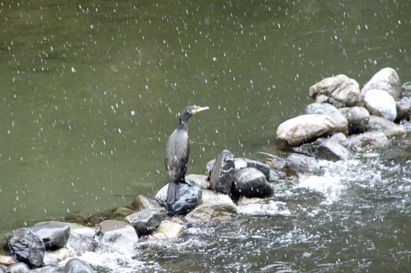

ラインベルガー: ピアノ四重奏曲
前回のゲッツと1年違いで、こちらはドイツではなくリヒテンシュタインに生まれたラインベルガーは、主にミュンヘンで長く活躍した作曲家である。松本大輔氏の著作で取り上げらていた、ヴァイオリンとオルガンの作品あたりから入ったクチであるが、この『ピアノ四重奏曲』はまだ30代の頃に作曲された華やかで若々しい曲。オルガン曲を多く残した人という先入観があるためか、冒頭のテーマはどことなくヴィドールの有名なトッカータを思わせる（作曲時期は近い）。全4楽章、特段の深みはないかもしれないものの、終始美しく希望に満ちた曲調は聴いていて幸せになる。
Josef Rheinberger: Piano Quartet
in E-Flat Major, Op. 38
Horst Göbel (pf)
Zoltan Almasi (vn)
Sally Clarke (va)
David Cofre (vc)
(1990)
このアルバムはThorofonレーベルが出していたラインベルガーの室内楽全集の一枚で、ちょっと探した限りでは他の演奏が見つからなかった。とはいえ素晴らしいアンサンブルで、録音も良いのでまったく不満はない。ジャケットはちょっと悪ふざけしているようだが、ヨーロッパでもこういういたずらがあるのかと思うと楽しい。ピアノのHorst Göbelは、CPOのゲッツの録音でGöbel Trioを率いていたピアニストと同じようである。弦のメンバーは、ジャケットによるとベルリンフィル・オーケストラアカデミー（いわゆるカラヤン・アカデミー）に当時在籍していた人たちのようだが詳細は分からない。ともかく曲と演奏の両面から合奏の楽しさが伝わってくるような、満ち足りたひとときを過ごすことができるアルバムであった。

(Feb. 24, 2024)